Support engineer.
I build the tooling the support team runs on.
Two years on a high-volume Zendesk queue, and most of the automation around it. Off the clock, Heimdall, a volunteer air-raid tracker that people in Kyiv open every night.
- Support automation
- Zendesk admin and API
- Node.js
- Python
- LLM and vision models (Ollama)
- Browser tooling and userscripts
- Dashboards and reporting
- Incident response and postmortems
- Linux, networking
The work at a glance
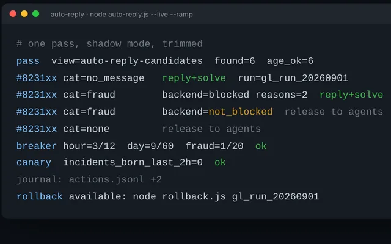
Auto-reply serviceReplaced a paid Zapier workflow. 1,037 tickets, zero incidents.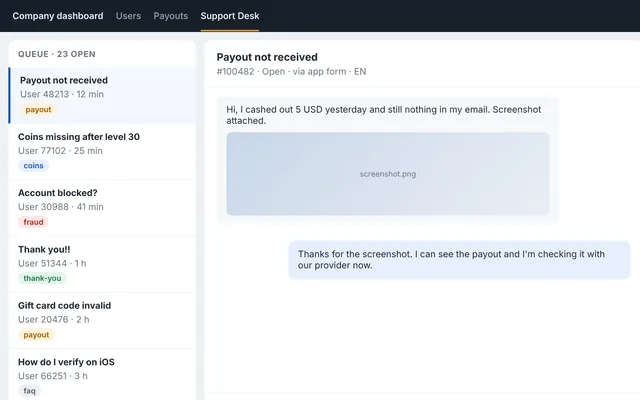
Support DeskAn agent workspace that engineering adopted natively.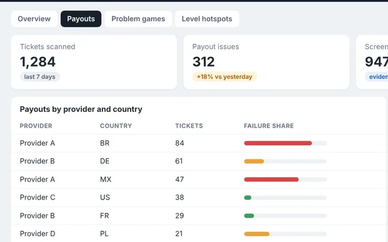
Scanner suiteAudits, a local vision model and a management dashboard.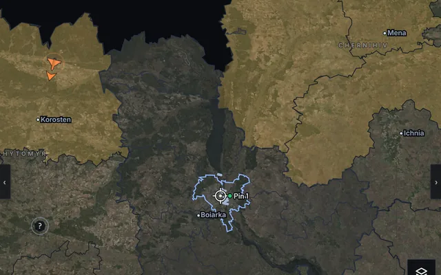
HeimdallFree air-raid tracker for Kyiv, used by air-defence teams.A Zapier replacement that cannot go rogue.
The team paid for a Zapier workflow that auto-answered simple tickets. In August 2026 it misfired and mass-tagged accounts as fraud. I rebuilt it as a single Node.js service with one design rule: nothing punitive happens without a positive signal from the backend, and every write can be undone with one command. It runs in shadow mode first, then live with a volume ramp. Since 1 September it has handled 1,037 tickets with no incident and no rollback.
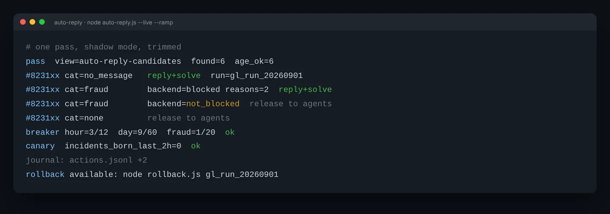
Nine guardrails
- No trust in labels. A ticket's type, priority or tag is never enough for a punitive action. Fraud needs a positive backend signal, and the check fails closed.
- Circuit breaker. Hard caps per hour, per day and for fraud. Tripping one pauses all writes and fires an alert; resuming is a deliberate human command.
- Kill switch. A file named STOP next to the script stops every write.
- Backlog protection. Tickets older than a set age are never touched, so a fresh start cannot blast the backlog.
- Scoped view. The service only sees new, unanswered tickets, and marks every one it examines so nothing is looked at twice.
- Journal and rollback. Each action carries a run tag and is appended to a journal. One command undoes a whole run, with an optional apology.
- Canary. Every pass checks for the exact signature of the August bug and alerts if it reappears.
- Shadow first. Live mode is explicit, and the number of actions per pass ramps up over days.
- Nothing gets stuck. Held tickets the service does not solve are released to agents, and a Zendesk automation releases them anyway if the service is down.
Also in the folder: a dry-run auditor that applies the same classifier to the whole backlog without writing anything, a resumable backfill executor, and a one-off stale-ticket follow-up. Same rules, same journal, same rollback.
An agent workspace inside the company dashboard.
Agents used to switch between Zendesk and the internal user dashboard for every ticket. Support Desk puts the whole loop on one screen: the queue, the ticket thread with screenshots, the user profile with linked accounts and fraud reasons, the actions, the reply box with macros, and weekly stats. Each agent connects with their own Zendesk login, so every action stays attributable. The engineering team later integrated the design natively into the dashboard.
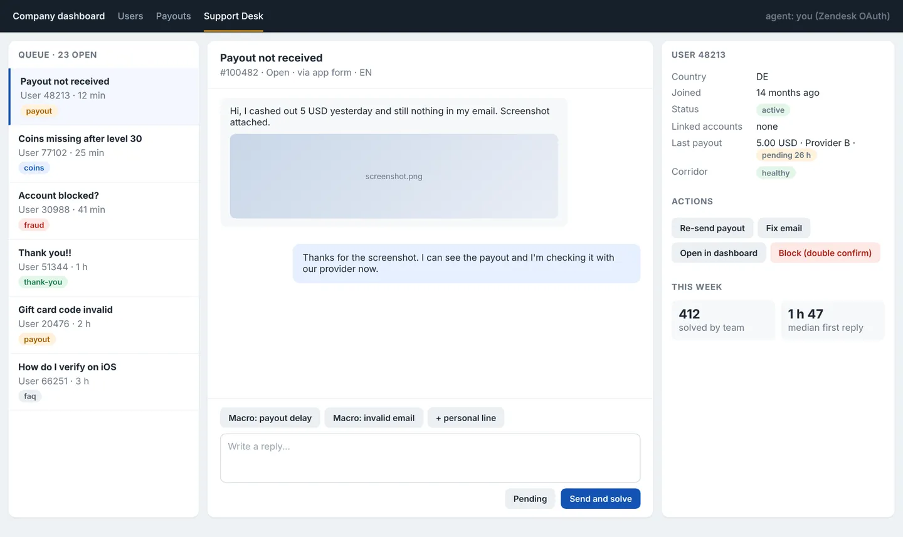
Find the pattern before it becomes a ticket spike.
Support data is full of patterns nobody has time to look for: a payout provider failing in one country, a game generating tickets far above its install base, forty people thanking us for a fix we already sent. Each scanner pulls a slice of tickets, enriches it with backend data, and shows a list the agent can act on in bulk. Nothing is sent without a review and a confirmation, and every bulk action re-checks the ticket right before writing.
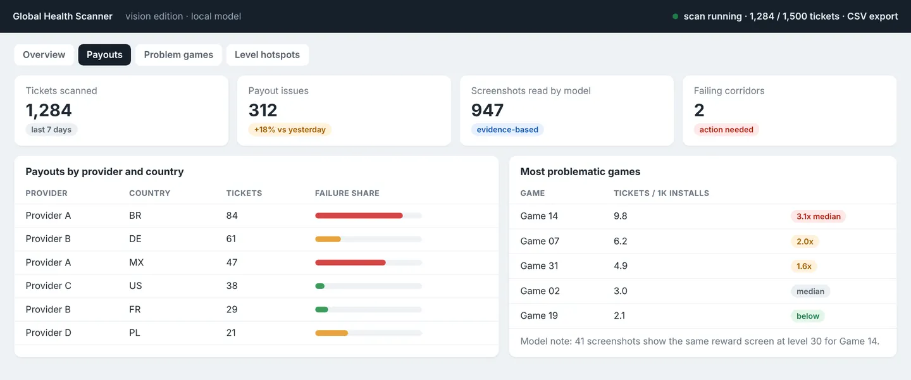
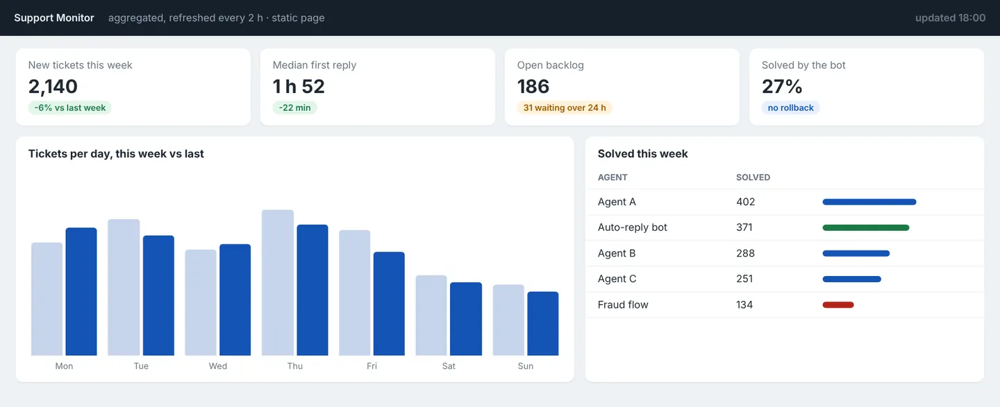
Support Suite: payout, fraud, coins4,700 lines
Six scanners in one panel.
More
Payout rows carry the amount, the provider, the gift-card supplier, blocked and multi-account flags, and the corridor status from the failure feed. The fraud tab groups 75 block reasons by family and ships a bot-bannable preset. Coins classifies purchase versus level claims from every customer reply, not just the first. A thank-you detector closes tickets whose last message is only gratitude, in any language, with a question guard. Cross-tab de-duplication and a merge button for multi-ticket senders.
Global Health ScannerVision edition
A four-tab report on the whole queue: overview, payouts by provider and country, most-problematic games (tickets against installs), issue hotspots by level.
More
A local vision model on my own GPU reads the screenshots and feeds evidence-based counts next to the install-based proxy. Live view while the scan runs, CSV export for everything.
Auto-ProcessorRule framework
Standalone handler for clearly resolvable categories, drip-fed at a random 15 to 60 second interval so it behaves like a person.
More
Dry-run by default. Re-verifies each ticket right before sending: still open, nobody replied since the scan. Every send is assigned to the agent and tagged.
Payout Recovery
Proactive recovery of non-fraud blocked payouts: temporarily unavailable corridors with a provider-recovery heuristic and batch re-send to the same address, an invalid-email fix queue with a one-click fix, and a surface-only view for the rest.
More
Fraud statuses are never fetched. Every batch is approved by a person.
Support MonitorStatic dashboard
A dashboard for management: tickets per day and first-reply time, this week against last; solved tickets per agent with the bot and the fraud flow as their own rows; the open backlog by assignee and by waiting time.
More
A scheduled job pulls Zendesk every two hours and publishes only aggregated numbers to a static page. No server, no personal data.
FAQ Scanner
Finds unsolved tickets that match simple FAQ topics and applies the team's existing macro in bulk, after the agent reviews the list.
Social Media Review
A keyboard-driven carousel for the screenshot review queue: one post at a time, approve, reject or skip with the arrow keys, per-user grouping, next-image preload.
More
Every decision is a keypress; nothing is bulk-decided.
Support Tool, Unified Dock, installer
A productivity widget for the ticket view (account lookup from the requester or sender address, one-button iOS liveness verification behind a double confirm), a dock that collapses every tool into one icon and auto-discovers new ones, and a three-click Windows installer with automatic updates.
More
New agents were set up in under five minutes.
These tools were built for my employer and run on their internal systems, so the code is not public. What is shown here is the design, the safety rules and the scale. I am happy to walk through any of them in a call.
"He independently developed several internal tools that became part of the team's daily operations. He remained dependable and effective under pressure, including during critical incidents, and consistently showed initiative in identifying opportunities to improve existing processes."Georgiana Fotache, Team Lead Operations, Gamelight GmbH. Signed letter, 6 November 2026.
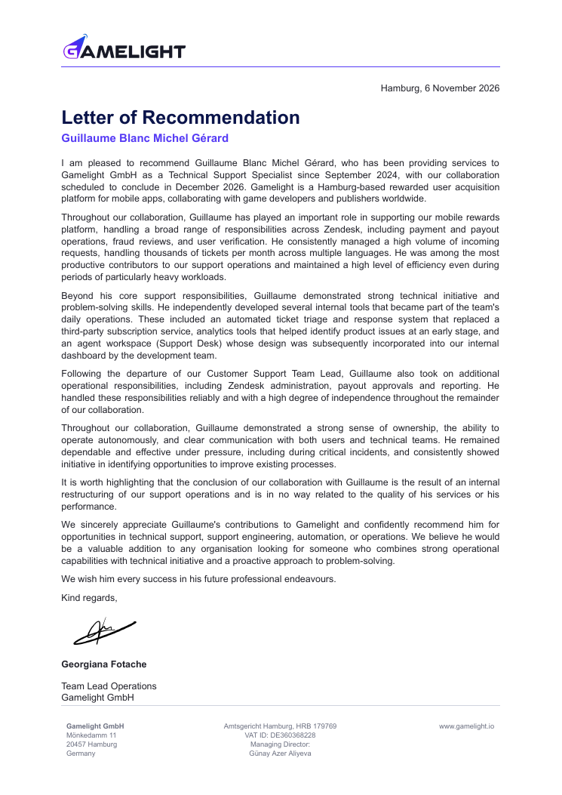
The letter covers the two years in full: a high-volume multilingual queue with payment, payout, fraud and verification work; the tools that replaced a third-party subscription and caught product issues early; the agent workspace whose design the engineering team adopted; and the operational scope I took over after the team lead left, including Zendesk administration, payout approvals and reporting.
It also states plainly that the end of the collaboration comes from an internal restructuring of support operations, and is unrelated to the quality of the work.
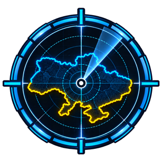
A free, live air-raid and drone tracker for Kyiv.
I designed and built Heimdall. The goal is simple: give people extra awareness of what is reported in the sky over them, so they can decide sooner to go to shelter, and potentially save lives. It is volunteer work from start to finish: free, no sign-up, no tracking, open source. Kyiv residents open it every night, and it is also used by mobile air-defence teams in Kyiv.
Open Heimdallheimdall.com.ua, free, works on any phone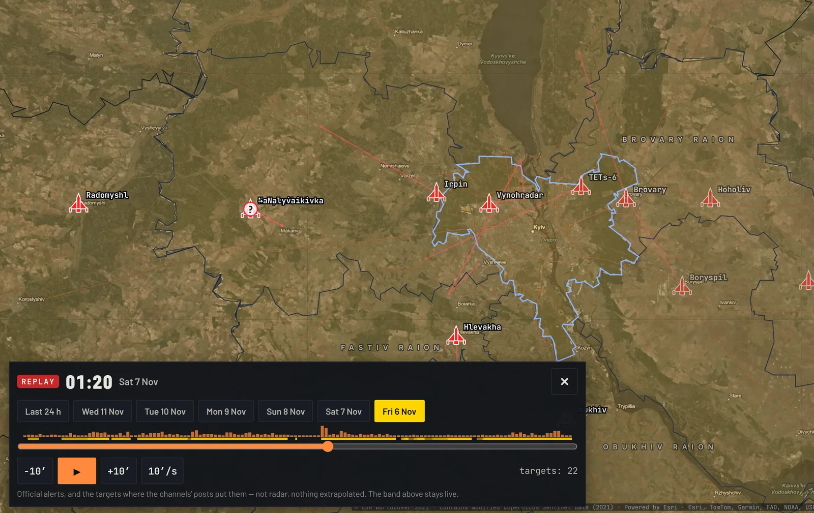
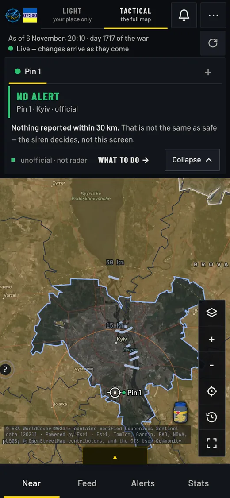
Under the hood, a single Python service reads the official alert data district by district and two dozen public Telegram channels, parses the Ukrainian and Russian text with written rules, and shows what was reported: a tactical map with the evidence behind every mark, and a light page for one place and what is within 30 km. Push notifications wake the phone with the app closed. It complements the official air-raid alert and never replaces it.
Counted without tracking anyone: the daily device hash is regenerated at midnight, so the same person cannot be recognised tomorrow. Figures from the built-in usage dashboard, 6 November 2026.
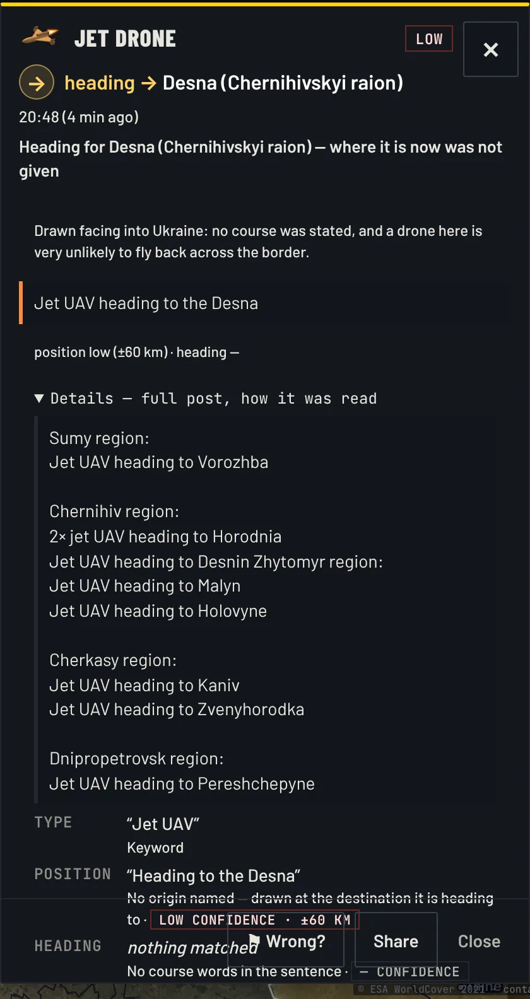
- Evidence, not guesses. Every marker opens the sentence it came from, the channel, the time and the confidence. No extrapolated trajectory unless you switch it on, no invented ETA.
- Stale is never shown as active. A target with no new report turns grey at 5 minutes and disappears at 15.
- Preventive warnings. Fighter take-offs and ballistic threats raise a banner before anything is seen, and drop it the moment a later post lifts it.
- Replay and history. Any of the last seven nights played back like a weather radar; explosions and shoot-downs over 72 hours.
- Operations from the dashboard. Add or mute a channel without a deploy, new channels start on trial, admin messages to every reader in three languages.
- Runs anywhere. Standard library only, one Dockerfile, deploys to Fly.io, demo mode with fake alerts for development.
Source on GitHub
Live tactical map
heimdall.com.ua/light
What to do, the guide
Everything on this page was built in Kyiv, during the war.
I have known Ukraine for years, and I chose to make Kyiv my home during the war. Since February 2022 the city has lived with air-raid alerts, most often at night, sometimes several in a row, and with winters of scheduled and unscheduled power cuts when the energy grid is hit. A working day here is planned around things most teams never think about: where the nearest shelter is, how long the laptop battery lasts, which hours the power is likely to be on, and whether tonight's alert is the kind you can sleep through or the kind you cannot.
That is the context behind two things on this page. The first is reliability as a habit: when your own electricity, internet and sleep are not guaranteed, you learn to build systems that fail safely, keep a journal, and can be rolled back by someone else if you are not there. The guardrails in the auto-reply service were not an abstract exercise. The second is Heimdall. It exists because my family and my neighbours needed a clearer picture of what was actually reported over the city, and because the only honest way to build it was to show the evidence behind every mark and never pretend to know more than the sources do.
Alongside my job, I have been the lead developer for FUSA, an NGO supporting Ukrainian defenders, since 2022, and I take part in a volunteer platform in the Kyiv region that has run humanitarian logistics since 2014. None of this is a hardship story. It is the environment I work in, and it has made me better at the job.
About
I am French, based in Kyiv, and I have spent ten years fixing things for people: PCs and small business networks first, then two years of L2 support on a mobile rewards platform where I ended up building most of the team's tooling. Before IT, three years in the French Gendarmerie as a field responder, which is where I learned to stay calm and procedural when it matters.
I like problems where the fix is a tool the team keeps using, and I distrust automation that cannot be rolled back. I work in English and French, and I am open to remote roles in technical support, support engineering, support operations and automation.
- Technical Support Specialist and Workflow Automation, GamelightSeptember 2024 to December 2026, remote. Took over the team lead's operational scope in August 2026.
- Heimdall, creator2026, open source, in daily use in Kyiv.
- Project lead developer, FUSA2022 to present. NGO supporting Ukrainian defenders.
- Computer technician, LDLC2019 to 2022, Lyon. Custom builds, diagnostics, remote support.
- Gendarme, Gendarmerie nationale2015 to 2018. Field intervention, APJA qualification.
- Web Developer and Integrator, OpenClassrooms2023. State-registered certification, RNCP level 5.